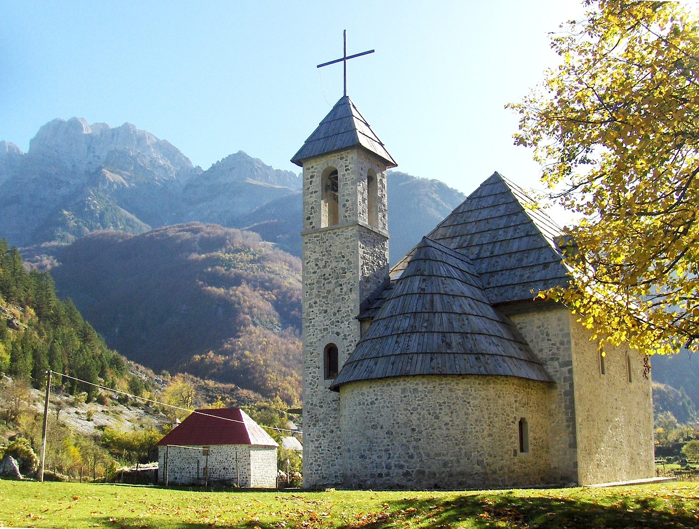
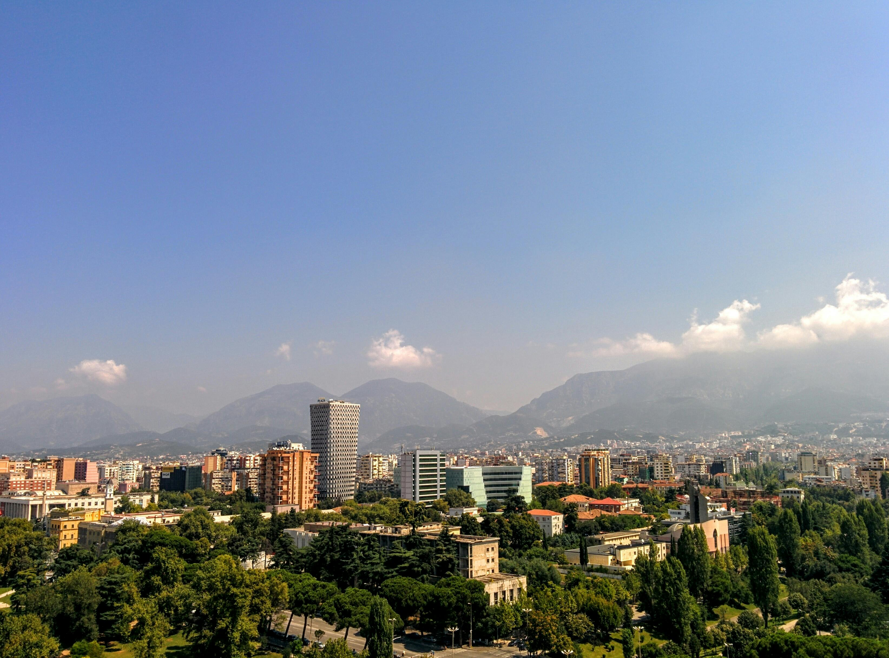
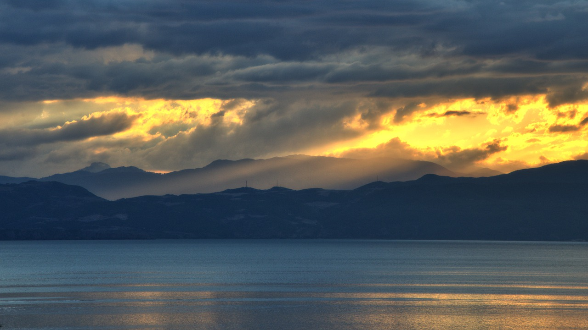

Visit Albania in Winter: Top Destinations and Activities
Albania in winter offers a magical blend of snow-covered landscapes, cultural experiences, and fewer tourists. Whether you’re an adventurer looking to explore the Albanian Alps or a culture enthusiast drawn to its historic cities, winter is the perfect time to discover the country's charm.

Theth – A Winter Wonderland
Highlights:
- Marvel at the iconic Theth Church, framed by snowy peaks.
- Hike to the Grunas Waterfall, which transforms into a frozen cascade in winter.
- Stay in a cozy guesthouse and enjoy traditional meals like flija by the fire.
Travel Tip: A 4x4 vehicle is essential for navigating the steep, snowy roads leading to Theth during winter months.
Dardha – A Hidden Ski Destination
Dardha, a picturesque village near Korçë, is perfect for a winter escape and skiing enthusiasts.
Highlights:
- Hit the slopes at Bigëll Ski Resort, ideal for beginners and families.
- Explore the village’s stone houses and charming cobblestone streets.
- Warm up with a bowl of lakror, a traditional Albanian pie.
Travel Tip: Rent a car with snow tires and chains to safely access the village.
Korçë – The Cultural Capital
Known as the cultural hub of Albania, Korçë is enchanting in winter with its festive atmosphere and cultural richness.
Highlights:
- Visit the National Museum of Medieval Art to admire historic icons.
- Stroll through the Old Bazaar, where you’ll find handmade crafts and local delicacies.
- Experience the festive spirit with Korçë’s famous Christmas Market.
Travel Tip: Korçë is easily accessible by car, and roads are well-maintained during winter.

Valbona Valley – A Snowy Retreat
For breathtaking views and tranquil surroundings, Valbona Valley in the Albanian Alps is a must-see in winter.
Highlights:
- Walk through snow-draped forests and enjoy the peaceful atmosphere.
- Visit local guesthouses to experience traditional Alpine hospitality.
- Trek the famous Valbona-Theth trail, if weather permits, or enjoy shorter winter hikes.
Travel Tip: Rent a robust SUV for safe travel through icy mountain roads.

Tirana – Winter in the Capital
The bustling capital offers a mix of modern amenities and cultural attractions, making it a great starting point for your Albanian winter adventure.
Highlights:
- Explore the Bunk'Art Museum to learn about Albania’s communist history.
- Visit the vibrant Skanderbeg Square, beautifully lit with holiday decorations.
- Enjoy cozy cafes and restaurants serving winter favorites like tavë kosi.
Travel Tip: Tirana is the hub for rental cars, making it a convenient base for day trips to other destinations.
Lake Ohrid – Serenity in Winter
Situated near Pogradec, the Albanian side of Lake Ohrid is serene and enchanting during winter.
Highlights:
- Take a peaceful stroll along the lakeside promenade.
- Visit the Drilon Springs, a quiet and picturesque spot.
- Explore nearby Lin Village, known for its mosaics and traditional charm.
Travel Tip: Pogradec is about 2.5 hours from Tirana, with well-maintained roads for an easy drive.
Winter Travel Tips in Albania
Choose the Right Car:
- Rent a 4x4 SUV for mountainous areas like Theth, Valbona, or Dardha.
- Ensure the vehicle has winter tires and snow chains.
Check the Weather:
- Mountain weather can change rapidly, so monitor forecasts before heading out.
Dress Warmly:
- Pack layers, waterproof boots, and insulated jackets, especially for snowy regions.
Plan Fuel Stops:
- Fill up your tank in larger towns before venturing into remote areas, where gas stations may be sparse.
Experience Winter in Albania with A.S KASALLA
Make your winter journey seamless with a reliable rental car:
- Winter-Ready Fleet: From compact city cars to rugged SUVs with snow tires.
- Convenient Pick-Up Locations: Available in Tirana, Shkodër, and Korçë.
- 24/7 Support: Assistance whenever you need it.